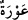
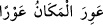
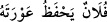
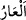
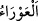
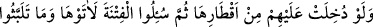
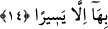

bahsetmesi bu yasaklamadan öncedir.
Medine’de ikamet eden kimsenin kokusu güzel olduğu, Medine’de pek çok güzel
kokular bulunduğu, Medîne’ye vebâ ve deccâl giremediği, yine Medine’de cüzzamlı
olmadığı için “Taybe” diye isimlendirilmiştir. Çünkü Medine’nin toprağı cüzzama
şifâdır. Cüzzam, (dört hılttan, yâni canlıda bulunan dört sıvıdan biri olan) sevdânın tüm
vücuda yayılmasından meydana gelen bir hastalıktır. Bu hastalık uzuvların mizaçlarını
ve şekillerini bozar. Bazen bu hastalık, uzuvların kangren olmasına ve yara olup
çürüyerek düşmesine kadar ilerler.
O halde Medine’deki evlerinize “dönün.” Münafıkların bu sözden muradları kaçıp
firar etmeyi emretmekti. Fakat sözlerini yumuşatmak ve onun kınanan firar kabilinden
olmadığını bildirmek için onu “dönmek” olarak ifâde ettiler. Münafıklar nifakları ve
hastalıkları sebebiyle insanları cihaddan alıkoymaya çalıştılar. Fakat onlara sadece
kendileri gibi olanlar muvafakat etti. Çünkü samîmî mü’min Allah ve Rasûlü’nden
başkasını tercih etmez.
Burada bu ümmet içinde kıyâmete kadar devam edecek fesad ve ifsad ehline işâret
vardır. Allah Teâlâ’dan bizi doğru yolda dâim kılmasını, sarsılmaksızın ve tereddüde
düşmeden birbirine hakkı ve sabrı tavsiye edenlerden eylemesini niyâz ederiz.
“İçlerinden bir kısmı” münâfıklardan bir grup, yâni Hârise oğulları ve Seleme
oğulları “ise: “Gerçekten” Medine’de “evlerimiz emniyette değil” diyerek
Peygamber’den” geri dönme konusunda “izin istiyordu;”
“
” eksiklik, noksan, kusur, zayıflık demektir. Âyette mübâlağa yoluyla
kusurlu/eksik/noksan/zayıf olana bu isim verilmiştir. Bir yerde düşman ve hırsızın
gelmesinden korkulan bir zayıflık/açık ve gedik göründüğünde “
” denir. “
” Falanca eksik, noksan ve kusurunu korur, demektir. Yine “avret” insanın
edeb yeridir. Aslı “
(ayıp, utanç verici şey)”dandır. Edeb yerinin açılıp
görülmesinde ar ve ayıp olduğu için kinaye olarak ona “avret” denilmiştir. Bu sebeple
kadınlara “avret” denilmiştir. Çirkin söze “
” denilmesi de buradandır. Buna göre
mânâ şöyledir: “Evlerimiz korunaksızdır. Yıkık, dökük eğretidir, isteyen girebilir. Sen
bize izin ver evlerimize gidelim, onları onarıp muhkem ve korunaklı duruma getirelim,
sonra askere ve orduya dönelim, diyorlardı. Hz. Peygamber (a.s.) da onlara izin
veriyordu.
“Oysa evleri tehlikede değildi,” bilakis sağlam ve korunaklı idi. Onlar izin
istemeyerek “sadece” savaştan “kaçmayı arzuluyorlardı.”